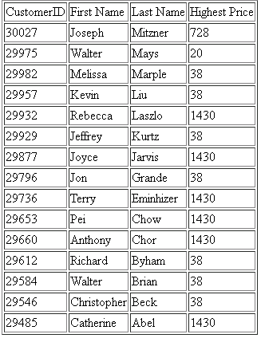
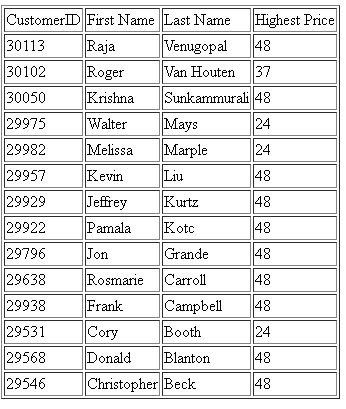

Preface
In this project, I was assigned to use the skills gained in writing SQL queries from the course and combine it with a programming language of my choice to build a simple Client-Server Interface.
The client needed to prompt the user to input a color, choosing from a list of colors that were associated with the products being sold, and also input a price greater than the average cost of the chosen color.
The database that information is being retrieved from is the
AdventureWorksLT Database. More specifically, I needed to retrieve four pieces of information from customers who bought products of the inputted color, including
- CustomerID
- First Name
- Last Name
- Highest Price (Ie. The most amount of money that customer spent on a product of the inputted color)
I was tasked with looking into the way AdventureWorksLT stored the data in order to retrieve this information, discovering that the architecture of the database required a natural join on four of the tables in the database:
- AdventureWorksLT.SalesLT.Product

- AdventureWorksLT.SalesLT.Customer

- AdventureWorksLT.SalesLT.SalesOrderHeader

- AdventureWorksLT.SalesLT.SalesOrderDetail
Views
From the tables shown above, in order to retrieve the four pieces of information required, the SELECT-FROM-WHERE SQL Query needed to be:
SELECT C.CustomerID AS CustomerID, C.FirstName AS FirstName, C.LastName AS LastName, MAX(SD.UnitPrice) AS HighestPrice
FROM AdventureWorksLT.SalesLT.Customer C, AdventureWorksLT.SalesLT.Product P, AdventureWorksLT.SalesLT.SalesOrderHeader SH, AdventureWorksLT.SalesLT.SalesOrderDetail SD
WHERE C.CustomerID = SH.CustomerID AND SH.SalesOrderID = SD.SalesOrderID AND P.ProductID = SD.ProductID AND P.Color = ''%s'' /* The color inputted from the client */
GROUP BY C.CustomerID, C.FirstName, C.LastName' /* In order to use the function MAX() in the SELECT clause*/
In order to save the SQL Server from having to redundantly process the same query, the client was set to only perform the above SELECT-FROM-WHERE query if a view for the color did not already exist, thus:
IF NOT EXISTS(SELECT * FROM sysobjects WHERE name='%s' AND xtype='V')
BEGIN
EXEC('CREATE VIEW %s AS
SELECT C.CustomerID AS CustomerID, C.FirstName AS FirstName, C.LastName AS LastName, MAX(SD.UnitPrice) AS HighestPrice
FROM AdventureWorksLT.SalesLT.Customer C, AdventureWorksLT.SalesLT.Product P, AdventureWorksLT.SalesLT.SalesOrderHeader SH, AdventureWorksLT.SalesLT.SalesOrderDetail SD
WHERE C.CustomerID = SH.CustomerID AND SH.SalesOrderID = SD.SalesOrderID AND P.ProductID = SD.ProductID AND P.Color = ''%s''
GROUP BY C.CustomerID, C.FirstName, C.LastName')
END
Python
I decided that Python would be the easiest language to use to build the client interface, since the documentation on the the module
PyMSSql was easy to understand, and the SQL queries were small enough that I did not have to worry about client-side performance being a bottleneck, what with Python being an
interpreted language.
We begin the program by declaring any server information needed to connect into variables, alongside any future variables we may need to call on:
import pymssql
# Initial Variable Declarations
host = 'cypress.csil.sfu.ca' # The information needed for the function pymssql.connect() to work correctly
user = 's_correyl'
password = '**********' # Password hidden
database = 'correyl354'
conn = pymssql.connect(host, user, password, database) # Making a connection to the Cypress CSIL Server
mycursor = conn.cursor()
tablename = 'AdventureWorksLT.SalesLT.Product'
valid_colors = [] # Array to store the valid colors to choose from, which needs to be retrieved from the database
valid_choice = 0 # The boolean variable to determine whether or not the input is a valid input
The first SQL query to the server retrieves all the product colors from the table AdventureWorksLT.SalesLT.Product to display to the user:
# Main Program
mycursor.execute('SELECT DISTINCT P.Color FROM '+tablename+' P WHERE P.color <> \'null\' ORDER BY P.Color') # SQL Query to output all valid colors for the user
row = mycursor.fetchone()
while row:
print("%s" % (row[0])) # Printing all valid colors
valid_colors.append(row[0]) # Appending all valid colors to valid_colors[]
row = mycursor.fetchone()
Next, we run a while loop that takes in user input, only leaving the while loop if the user inputs a color returned from the query above:
while valid_choice == 0:
input_color = raw_input('What color would you like to see customer information for?\n')
input_color2 = input_color
if input_color in valid_colors:
if input_color == 'Silver/Black': # SQL does not allow for '/' to be part of a VIEW name, thus this input needs to have it removed
input_color = 'SilverBlack'
input_color2 = 'Silver/Black' # input_color2 is what is used in the FROM clause, which is allowed to have entries with '/'
valid_choice = 1
viewname = input_color+'Spending'
else:
print('The color you inputted is not a valid color. Please input a valid color.\n')
Given that a valid color has been inputted, the client then checks to see if a View already exists for this color, using information stored in the variables 'viewname' and 'input_color2' to input into the query:
mycursor.execute(
"""IF NOT EXISTS(SELECT * FROM sysobjects where name='%s' and xtype='V')
BEGIN
EXEC('CREATE VIEW %s AS
SELECT C.CustomerID AS CustomerID, C.FirstName AS FirstName, C.LastName AS LastName, MAX(SD.UnitPrice) AS HighestPrice
FROM AdventureWorksLT.SalesLT.Customer C, AdventureWorksLT.SalesLT.Product P, AdventureWorksLT.SalesLT.SalesOrderHeader SH, AdventureWorksLT.SalesLT.SalesOrderDetail SD
WHERE C.CustomerID = SH.CustomerID AND SH.SalesOrderID = SD.SalesOrderID AND P.ProductID = SD.ProductID AND P.Color = ''%s''
GROUP BY C.CustomerID, C.FirstName, C.LastName')
END""" % (viewname, viewname, input_color2)
)
Then a query on the view associated with the inputted color is executed. Given that the inputted price is greater than the average cost of all the products of the inputted color, the information retrieved from the view is outputted into a HTML document:
input_price = input('What PRICE would you like to see customer information for?\n')
if row == None: # If there is no customer information for the inputted color
print(input_color+' has not been purchased by any customers.')
else:
if input_price > row[0]: # Comparing the inputted price with the average price of the inputted color
mycursor.execute('SELECT * FROM '+input_color+'Spending ORDER BY LastName DESC')
row = mycursor.fetchone()
fo = open("outputIV.html", "w")
fo.write("\n")
fo.write("\n")
fo.write("| CustomerID | First Name | Last Name | Highest Price | \n")
while row:
fo.write("| %d | %s | %s | %d |
\n" % (row[0], row[1], row[2], row[3]))
row = mycursor.fetchone()
fo.write("
")
fo.close()
print('The customer information requested has been outputted to the file \'outputIV.html\'.')
else:
print("Price is too low for "+input_color)
The source code for this program is as follows:
import pymssql
# Initial Variable Declarations
host = 'cypress.csil.sfu.ca' # The information needed for the function pymssql.connect() to work correctly
user = 's_correyl'
password = '***********' # Password hidden
database = 'correyl354'
conn = pymssql.connect(host, user, password, database) # Making a connection to the Cypress CSIL Server
mycursor = conn.cursor()
tablename = 'AdventureWorksLT.SalesLT.Product'
valid_colors = [] # All valid colors to choose from when prompted
valid_choice = 0
# Main Program
mycursor.execute('SELECT DISTINCT P.Color FROM '+tablename+' P WHERE P.color <> \'null\' ORDER BY P.Color') # SQL Query to output all valid colors for the user
row = mycursor.fetchone()
while row:
print("%s" % (row[0])) # Printing all valid colors
valid_colors.append(row[0]) # Appending all valid colors to valid_colors[]
row = mycursor.fetchone()
while valid_choice == 0:
input_color = raw_input('What color would you like to see customer information for?\n')
input_color2 = input_color
if input_color in valid_colors:
if input_color == 'Silver/Black': # SQL does not allow for '/' to be part of a VIEW name, thus this input needs to have it removed
input_color = 'SilverBlack'
input_color2 = 'Silver/Black'
valid_choice = 1
viewname = input_color+'Spending'
else:
print('The color you inputted is not a valid color. Please input a valid color.\n')
mycursor.execute(
"""IF NOT EXISTS(SELECT * FROM sysobjects where name='%s' and xtype='V')
BEGIN
EXEC('CREATE VIEW %s AS
SELECT C.CustomerID AS CustomerID, C.FirstName AS FirstName, C.LastName AS LastName, MAX(SD.UnitPrice) AS HighestPrice
FROM AdventureWorksLT.SalesLT.Customer C, AdventureWorksLT.SalesLT.Product P, AdventureWorksLT.SalesLT.SalesOrderHeader SH, AdventureWorksLT.SalesLT.SalesOrderDetail SD
WHERE C.CustomerID = SH.CustomerID AND SH.SalesOrderID = SD.SalesOrderID AND P.ProductID = SD.ProductID AND P.Color = ''%s''
GROUP BY C.CustomerID, C.FirstName, C.LastName')
END""" % (viewname, viewname, input_color2)
)
mycursor.execute('SELECT * FROM '+input_color+'Spending ORDER BY LastName DESC') # SQL Query to retrieve the customer information on the requested color
row = mycursor.fetchone()
input_price = input('What PRICE would you like to see customer information for?\n')
if row == None: # If there is no customer information for the inputted color
print(input_color+' has not been purchased by any customers.')
else:
if input_price > row[0]: # Comparing the inputted price with the average price of the inputted color
mycursor.execute('SELECT * FROM '+input_color+'Spending ORDER BY LastName DESC')
row = mycursor.fetchone()
fo = open("outputIV.html", "w")
fo.write("\n")
fo.write("\n")
fo.write("| CustomerID | First Name | Last Name | Highest Price | \n")
while row:
fo.write("| %d | %s | %s | %d |
\n" % (row[0], row[1], row[2], row[3]))
row = mycursor.fetchone()
fo.write("
")
fo.close()
print('The customer information requested has been outputted to the file \'outputIV.html\'.')
else:
print("Price is too low for "+input_color)
Sample Executions
Below are some images from running the program above and querying for products of the color Red, Blue and Silver/Black, and the resulting HTML files that were generated from the client:
Red
Blue

Silver/Black
